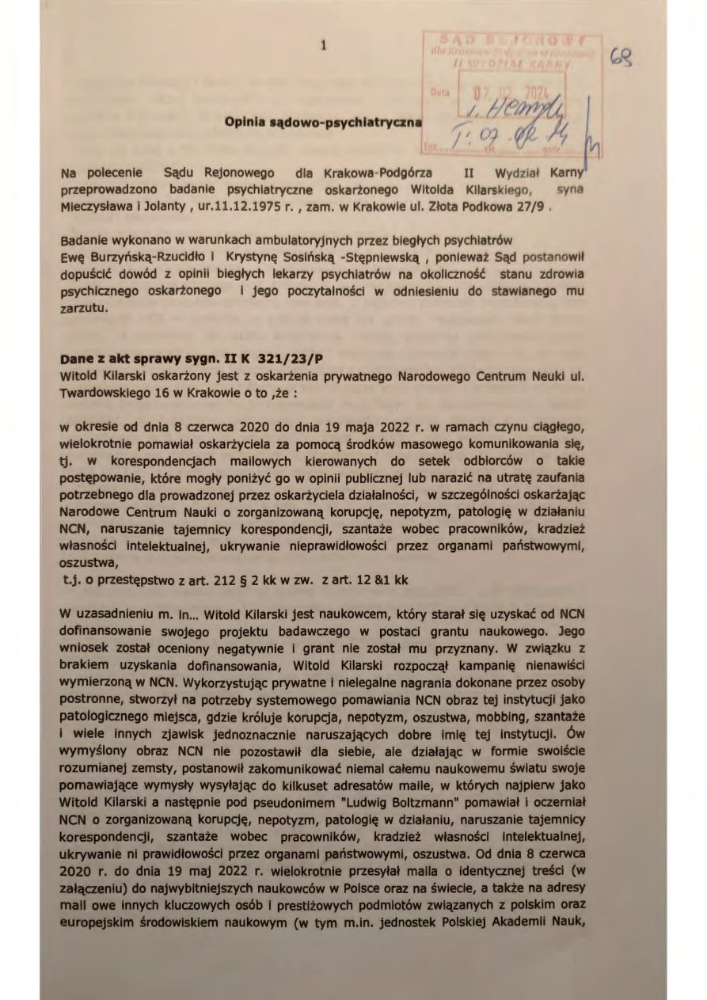

Korupcja w Narodowym Centrum Nauki
29 maja 2020 roku dyrektor Narodowego Centrum Nauki, Zbigniew Błocki, działając na rzecz prof. Marcina Drąga z Politechniki Wrocławskiej, polecił Laurze Bandurze-Morgan (kierownikowi Działu Kontroli Grantów NCN) postawić dr. Kilarskiemu ultimatum: wycofaj wniosek grantowy złożony do NAWA (program Polskie Powroty, dotyczący leczenia cukrzycy typu 1) — albo poniesiesz konsekwencje.
„Wycofaj grant z NAWA do poniedziałku… i tak go nie dostaniesz… to ma uspokoić prof. Drąga."
— e-mail Laury Bandury-Morgan z oficjalnego konta NCN, 1 czerwca 2020 r.
1 czerwca 2020 r. Laura Bandura-Morgan wysłała oficjalny e-mail z konta NCN potwierdzający żądanie Błockiego. NCN i NAWA to formalnie niezależne instytucje — działające na podstawie odrębnych ustaw, w różnych miastach (Kraków i Warszawa). Mimo to dyrektor NCN ingerował w proces grantowy NAWA.
W konkursie NAWA Polskie Powroty 2020 przyznano 12 grantów. Dr Kilarski zajął 13. miejsce — pierwszy na liście rezerwowej. Identyczny wynik powtórzył się w 2021 roku.
Dowody
- 10 nagrań audio (2020–2021) dokumentujących szantaż, nieuprawniony dostęp do prywatnej korespondencji, sfałszowane recenzje (kopia-wklej Mudelsee), nepotyzm (powiązania Błocki–Liana–UJ) oraz tuszowanie kontroli NIK.
- Oficjalny e-mail NCN od Laury Bandury-Morgan (1 czerwca 2020) potwierdzający ultimatum Błockiego.
- Chronologiczna korespondencja e-mailowa Kilarski–Błocki–Drąg–Bandura (2020–2021).
- Sfałszowane recenzje Manfreda Mudelsee w programie GRIEG (metoda kopiuj-wklej).
- Dokumenty wewnętrzne NIK (Najwyższa Izba Kontroli) dotyczące tuszowania sprawy.
Brak reakcji prokuratury
Dr Kilarski złożył zawiadomienie do prokuratury. Prokurator Ochońska-Wróbel odmówiła wszczęcia śledztwa (sygn. 4135-1.Ds.96.2022). Zamiast ścigać korupcję — to sądy ukarały sygnalistę: grzywny, zakazy publikacji, przymusowe przeprosiny.
Corruption at Poland's National Science Centre
On 29 May 2020, NCN Director Zbigniew Błocki — acting on behalf of Prof. Marcin Drąg of Wrocław University of Technology — ordered Laura Bandura-Morgan (Head of NCN Grants Control) to deliver an ultimatum to Dr. Kilarski: withdraw your grant application from NAWA (Polish Returns programme, aimed at curing Type 1 Diabetes) or face consequences.
"Withdraw your NAWA grant by Monday… you won't get it anyway… this is to appease Prof. Drąg."
— Laura Bandura-Morgan's email from official NCN account, 1 June 2020
On 1 June 2020, Laura Bandura-Morgan sent an official email from her NCN account confirming Błocki's demand. NCN and NAWA are supposedly independent institutions — governed by different laws, based in different cities (Kraków vs. Warsaw). Yet Błocki interfered in NAWA's grant process.
In the 2020 NAWA Polish Returns competition, 12 grants were awarded. Dr. Kilarski ranked 13th — first alternate. The same result occurred in 2021.
Evidence
- 10 audio recordings (2020–2021) documenting blackmail, unauthorized access to private messages, falsified reviews (Mudelsee copy-paste), nepotism (Błocki–Liana–UJ connections), and the NIK audit cover-up.
- Official NCN email from Laura Bandura-Morgan (1 June 2020) confirming Błocki's ultimatum.
- Chronological email correspondence Kilarski–Błocki–Drąg–Bandura (2020–2021).
- Falsified reviews by Manfred Mudelsee in the GRIEG programme (copy-paste method).
- Internal NIK (Supreme Audit Office) cover-up documents.
Prosecutor's refusal
Dr. Kilarski reported to prosecutors. Prosecutor Ochońska-Wróbel refused to investigate (case 4135-1.Ds.96.2022). Instead of investigating corruption, courts punished the whistleblower: fines, publication bans, forced apologies.
Corruption au Centre national des sciences de Pologne
Le 29 mai 2020, le directeur du NCN, Zbigniew Błocki, agissant au nom du prof. Marcin Drąg de l'Université de technologie de Wrocław, a ordonné à Laura Bandura-Morgan (cheffe du contrôle des subventions du NCN) de poser un ultimatum au Dr Kilarski : retirez votre demande de subvention auprès de la NAWA (programme Retours polonais, visant à guérir le diabète de type 1) — ou subissez les conséquences.
« Retirez votre subvention NAWA d'ici lundi… vous ne l'obtiendrez pas de toute façon… c'est pour apaiser le prof. Drąg. »
— E-mail de Laura Bandura-Morgan depuis le compte officiel du NCN, 1er juin 2020
Le 1er juin 2020, Laura Bandura-Morgan a envoyé un e-mail officiel depuis son compte NCN confirmant l'exigence de Błocki. Le NCN et la NAWA sont censés être des institutions indépendantes — régies par des lois différentes, situées dans des villes différentes (Cracovie et Varsovie). Pourtant, Błocki est intervenu dans le processus de la NAWA.
Lors du concours NAWA Retours polonais 2020, 12 subventions ont été attribuées. Le Dr Kilarski s'est classé 13e — premier suppléant. Le même résultat s'est reproduit en 2021.
Preuves
- 10 enregistrements audio (2020–2021) documentant le chantage, l'accès non autorisé aux messages privés, les évaluations falsifiées (copier-coller de Mudelsee), le népotisme (liens Błocki–Liana–UJ) et la dissimulation du contrôle de la NIK.
- E-mail officiel du NCN de Laura Bandura-Morgan (1er juin 2020) confirmant l'ultimatum de Błocki.
- Correspondance chronologique Kilarski–Błocki–Drąg–Bandura (2020–2021).
- Évaluations falsifiées de Manfred Mudelsee dans le programme GRIEG.
- Documents internes de la NIK (Cour suprême de contrôle) relatifs à la dissimulation.
Refus du procureur
Le Dr Kilarski a déposé plainte. La procureure Ochońska-Wróbel a refusé d'enquêter (dossier 4135-1.Ds.96.2022). Au lieu de poursuivre la corruption, les tribunaux ont puni le lanceur d'alerte : amendes, interdictions de publication, excuses forcées.
Korruption am Nationalen Wissenschaftszentrum Polens
Am 29. Mai 2020 wies der NCN-Direktor Zbigniew Błocki — im Auftrag von Prof. Marcin Drąg von der Technischen Universität Breslau — Laura Bandura-Morgan (Leiterin der Fördermittelkontrolle des NCN) an, Dr. Kilarski ein Ultimatum zu stellen: Ziehen Sie Ihren Förderantrag bei NAWA zurück (Programm Polnische Rückkehr, zur Heilung von Typ-1-Diabetes) — oder tragen Sie die Konsequenzen.
„Ziehen Sie Ihren NAWA-Antrag bis Montag zurück… Sie werden ihn ohnehin nicht bekommen… das soll Prof. Drąg beruhigen."
— E-Mail von Laura Bandura-Morgan vom offiziellen NCN-Konto, 1. Juni 2020
Am 1. Juni 2020 sandte Laura Bandura-Morgan eine offizielle E-Mail von ihrem NCN-Konto, die Błockis Forderung bestätigte. NCN und NAWA sind angeblich unabhängige Institutionen — mit unterschiedlichen Gesetzen, in verschiedenen Städten (Krakau und Warschau). Dennoch griff Błocki in den NAWA-Förderprozess ein.
Im NAWA-Wettbewerb Polnische Rückkehr 2020 wurden 12 Förderungen vergeben. Dr. Kilarski belegte Platz 13 — erster Nachrücker. Das gleiche Ergebnis wiederholte sich 2021.
Beweise
- 10 Audioaufnahmen (2020–2021), die Erpressung, unbefugten Zugriff auf private Nachrichten, gefälschte Gutachten (Mudelsee-Kopieren), Vetternwirtschaft (Verbindungen Błocki–Liana–UJ) und die Vertuschung der NIK-Prüfung dokumentieren.
- Offizielle NCN-E-Mail von Laura Bandura-Morgan (1. Juni 2020), die Błockis Ultimatum bestätigt.
- Chronologischer E-Mail-Verkehr Kilarski–Błocki–Drąg–Bandura (2020–2021).
- Gefälschte Gutachten von Manfred Mudelsee im GRIEG-Programm (Copy-Paste-Methode).
- Interne NIK-Dokumente (Oberste Rechnungskammer) zur Vertuschung.
Weigerung der Staatsanwaltschaft
Dr. Kilarski erstattete Anzeige. Staatsanwältin Ochońska-Wróbel lehnte die Ermittlung ab (Az. 4135-1.Ds.96.2022). Anstatt Korruption zu verfolgen, bestraften die Gerichte den Whistleblower: Geldstrafen, Publikationsverbote, erzwungene Entschuldigungen.
Корупція в Національному науковому центрі Польщі
29 травня 2020 року директор NCN Збігнев Блоцкі, діючи від імені проф. Марціна Дрога з Вроцлавської політехніки, наказав Лаурі Бандурі-Морган (керівнику відділу контролю грантів NCN) поставити ультиматум д-ру Кіларському: відкличте свою грантову заявку з NAWA (програма «Польські повернення», спрямована на лікування діабету 1 типу) — або понесете наслідки.
«Відкличте грант NAWA до понеділка… ви його все одно не отримаєте… це для заспокоєння проф. Дрога.»
— Електронний лист Лаури Бандури-Морган з офіційного облікового запису NCN, 1 червня 2020 р.
1 червня 2020 р. Лаура Бандура-Морган надіслала офіційний електронний лист зі свого облікового запису NCN, підтверджуючи вимогу Блоцкого. NCN та NAWA є формально незалежними установами — діють за різними законами, у різних містах (Краків та Варшава). Проте Блоцкі втрутився у грантовий процес NAWA.
У конкурсі NAWA «Польські повернення» 2020 було присуджено 12 грантів. Д-р Кіларський зайняв 13-те місце — перший у резервному списку. Такий самий результат повторився у 2021 році.
Докази
- 10 аудіозаписів (2020–2021), що документують шантаж, несанкціонований доступ до приватних повідомлень, сфальсифіковані рецензії (метод копіювання Мудельзе), кумівство (зв'язки Блоцкі–Ліана–УЯ) та приховування аудиту НІК.
- Офіційний електронний лист NCN від Лаури Бандури-Морган (1 червня 2020), що підтверджує ультиматум Блоцкого.
- Хронологічне листування Кіларський–Блоцкі–Дрог–Бандура (2020–2021).
- Сфальсифіковані рецензії Манфреда Мудельзе в програмі GRIEG (метод копіювання).
- Внутрішні документи НІК (Вища контрольна палата) щодо приховування.
Відмова прокуратури
Д-р Кіларський подав заяву до прокуратури. Прокурор Охонська-Врубель відмовилася від розслідування (справа 4135-1.Ds.96.2022). Замість розслідування корупції суди покарали викривача: штрафи, заборони публікацій, примусові вибачення.
Ukarany sygnalista, nie skorumpowani urzędnicy
Zamiast ścigać korupcję, polski wymiar sprawiedliwości obrócił się przeciwko sygnaliście.
The whistleblower punished, not the corrupt officials
Instead of prosecuting corruption, Poland's justice system turned against the whistleblower.
Le lanceur d'alerte puni, pas les fonctionnaires corrompus
Au lieu de poursuivre la corruption, le système judiciaire polonais s'est retourné contre le lanceur d'alerte.
Der Whistleblower bestraft, nicht die korrupten Beamten
Anstatt Korruption zu verfolgen, wandte sich das polnische Justizsystem gegen den Whistleblower.
Покараний викривач, а не корумповані чиновники
Замість переслідування корупції, польська система правосуддя обернулася проти викривача.
Kluczowe dowody
Poniżej znajdują się dokumenty potwierdzające korupcję w NCN. Ultimatum e-mailowe od Laury Bandury-Morgan jest kluczowym dowodem w sprawie.

- 1.Ultimatum NCN — mail Laury Bandury-Morgan z 1 czerwca 2020JPG
- 2.
 Chronologiczna korespondencja mailowa Kilarski-Błocki-Drąg-Bandura (2020-2021)DOCX
Chronologiczna korespondencja mailowa Kilarski-Błocki-Drąg-Bandura (2020-2021)DOCX - 3.
 Kompletna analiza 10 nagrań audio — dowody szantażu i korupcji w NCNDOCX
Kompletna analiza 10 nagrań audio — dowody szantażu i korupcji w NCNDOCX - 4.
 Apelacja od wyroku II K 321/23/P (NCN/Błocki vs. Kilarski)DOCX
Apelacja od wyroku II K 321/23/P (NCN/Błocki vs. Kilarski)DOCX - 5.
 Uzupełnienie apelacji od wyroku Sądu Okręgowego z 15 listopada 2024DOCX
Uzupełnienie apelacji od wyroku Sądu Okręgowego z 15 listopada 2024DOCX - 6.
 Wnioski procesowe — apelacjaDOCX
Wnioski procesowe — apelacjaDOCX - 7.
 Analiza powiązań: Babik, Liana, Zwonek, Błocki — nepotyzm w NCNDOCX
Analiza powiązań: Babik, Liana, Zwonek, Błocki — nepotyzm w NCNDOCX - 8.
 Załącznik do zawiadomienia do prokuraturyDOCX
Załącznik do zawiadomienia do prokuraturyDOCX - 9.
 Postanowienie Prokuratury — odmowa wszczęcia śledztwa (Ochońska-Wróbel)PDF
Postanowienie Prokuratury — odmowa wszczęcia śledztwa (Ochońska-Wróbel)PDF - 10.
 Wyrok w sprawie Laura B-M vs. Kilarski (sędzia Chmielarz)PDF
Wyrok w sprawie Laura B-M vs. Kilarski (sędzia Chmielarz)PDF - 11.

Opinia psychiatryczno-psychologicznaPDF - 12.
 CV i lista publikacji naukowych dr. Witolda KilarskiegoDOCX
CV i lista publikacji naukowych dr. Witolda KilarskiegoDOCX
Key Evidence
Below are documents supporting the case of corruption at NCN. The ultimatum email from Laura Bandura-Morgan is the central piece of evidence.
- 1.NCN Ultimatum — Laura Bandura-Morgan's email, 1 June 2020JPG
- 2.Chronological email correspondence Kilarski-Błocki-Drąg-Bandura (2020-2021)DOCX
- 3.Complete analysis of 10 audio recordings — evidence of blackmail and corruption at NCNDOCX
- 4.Appeal against verdict II K 321/23/P (NCN/Błocki vs. Kilarski)DOCX
- 5.Supplementary appeal against Kraków District Court verdict of 15 November 2024DOCX
- 6.Procedural motions — appealDOCX
- 7.Analysis of connections: Babik, Liana, Zwonek, Błocki — nepotism at NCNDOCX
- 8.Attachment to criminal complaint filed with prosecutorDOCX
- 9.Prosecutor's decision — refusal to investigate (Ochońska-Wróbel)PDF
- 10.Verdict in Laura B-M vs. Kilarski case (Judge Chmielarz)PDF
- 11.Psychiatric-psychological expert opinionPDF
- 12.CV and list of scientific publications of Dr. Witold KilarskiDOCX
Preuves clés
Ci-dessous les documents attestant de la corruption au NCN. L'e-mail d'ultimatum de Laura Bandura-Morgan constitue la pièce centrale.
- 1.Ultimatum du NCN — e-mail de Laura Bandura-Morgan, 1er juin 2020JPG
- 2.Correspondance chronologique Kilarski-Błocki-Drąg-Bandura (2020-2021)DOCX
- 3.Analyse complète de 10 enregistrements audio — preuves de chantage et corruption au NCNDOCX
- 4.Appel du verdict II K 321/23/P (NCN/Błocki c. Kilarski)DOCX
- 5.Complément d'appel contre le verdict du tribunal régional du 15 novembre 2024DOCX
- 6.Conclusions de procédure — appelDOCX
- 7.Analyse des liens : Babik, Liana, Zwonek, Błocki — népotisme au NCNDOCX
- 8.Pièce jointe à la plainte pénale déposée au parquetDOCX
- 9.Décision du procureur — refus d'enquête (Ochońska-Wróbel)PDF
- 10.Verdict Laura B-M c. Kilarski (juge Chmielarz)PDF
- 11.Expertise psychiatrique et psychologiquePDF
- 12.CV et liste de publications du Dr Witold KilarskiDOCX
Schlüsselbeweise
Nachfolgend die Dokumente, die die Korruption am NCN belegen. Die Ultimatum-E-Mail von Laura Bandura-Morgan ist das zentrale Beweisstück.
- 1.NCN-Ultimatum — E-Mail von Laura Bandura-Morgan, 1. Juni 2020JPG
- 2.Chronologischer E-Mail-Verkehr Kilarski-Błocki-Drąg-Bandura (2020-2021)DOCX
- 3.Vollständige Analyse der 10 Audioaufnahmen — Beweise für Erpressung und Korruption am NCNDOCX
- 4.Berufung gegen Urteil II K 321/23/P (NCN/Błocki gegen Kilarski)DOCX
- 5.Ergänzung der Berufung gegen das Urteil des Landgerichts Krakau vom 15. November 2024DOCX
- 6.Verfahrensanträge — BerufungDOCX
- 7.Analyse der Verbindungen: Babik, Liana, Zwonek, Błocki — Vetternwirtschaft am NCNDOCX
- 8.Anlage zur Strafanzeige bei der StaatsanwaltschaftDOCX
- 9.Beschluss der Staatsanwaltschaft — Ablehnung der Ermittlung (Ochońska-Wróbel)PDF
- 10.Urteil Laura B-M gegen Kilarski (Richterin Chmielarz)PDF
- 11.Psychiatrisch-psychologisches GutachtenPDF
- 12.Lebenslauf und Publikationsliste von Dr. Witold KilarskiDOCX
Ключові докази
Нижче наведено документи, що підтверджують корупцію в NCN. Електронний лист-ультиматум від Лаури Бандури-Морган є центральним доказом.
- 1.Ультиматум NCN — лист Лаури Бандури-Морган, 1 червня 2020JPG
- 2.Хронологічне листування Кіларський-Блоцкі-Дрог-Бандура (2020-2021)DOCX
- 3.Повний аналіз 10 аудіозаписів — докази шантажу та корупції в NCNDOCX
- 4.Апеляція на вирок II K 321/23/P (NCN/Блоцкі проти Кіларського)DOCX
- 5.Доповнення апеляції на рішення окружного суду Кракова від 15 листопада 2024DOCX
- 6.Процесуальні клопотання — апеляціяDOCX
- 7.Аналіз зв'язків: Бабік, Ліана, Звонек, Блоцкі — кумівство в NCNDOCX
- 8.Додаток до заяви про злочин, поданої до прокуратуриDOCX
- 9.Рішення прокуратури — відмова від розслідування (Охонська-Врубель)PDF
- 10.Вирок у справі Лаура Б-М проти Кіларського (суддя Хмелаж)PDF
- 11.Психіатрично-психологічний висновокPDF
- 12.Резюме та список наукових публікацій д-ра Вітольда КіларськогоDOCX
Sfałszowane recenzje Manfreda Mudelsee
Sprawa Mudelsee pokazuje, jak NCN chronił zagranicznego eksperta, który złożył skopiowane recenzje do wielu wniosków grantowych w programie GRIEG. Ekspert Manfred Mudelsee używał identycznych szablonów tekstowych do oceny różnych naukowców, niekiedy przyznając wysokie noty, a innym razem niskie — używając tych samych skopiowanych fraz.
Mimo formalnej skargi Laury Bandury-Morgan do Komisji ds. Rzetelności Badań, dyrektor NCN Zbigniew Błocki oficjalnie odmówił zbadania sprawy, twierdząc, że zachowanie eksperta nie stanowi „przewinienia dyscyplinarnego w nauce". Decyzja ta zapadła tego samego dnia, gdy Błocki potajemnie przygotowywał odpowiedź NCN na audyt NIK (Najwyższej Izby Kontroli), który krytykował procedury kontrolne NCN.
Dokumenty
- 1.
 Analiza recenzji Mudelsee — kopiuj-wklej w wielu wnioskach GRIEG (Zaborska, Grabiec, Bąk, Szymczycha)DOCX
Analiza recenzji Mudelsee — kopiuj-wklej w wielu wnioskach GRIEG (Zaborska, Grabiec, Bąk, Szymczycha)DOCX - 2.
 Wewnętrzne maile NCN — Laura Bandura-Morgan zgłasza nieprawidłowe recenzje eksperta. Odrzucająca odpowiedź Anny Wieczorek.DOCX
Wewnętrzne maile NCN — Laura Bandura-Morgan zgłasza nieprawidłowe recenzje eksperta. Odrzucająca odpowiedź Anny Wieczorek.DOCX - 3.
 Oficjalne pismo NCN (podpisane przez Błockiego, 04.12.2020) ODMAWIAJĄCE zbadania przewinienia MudelseePDF
Oficjalne pismo NCN (podpisane przez Błockiego, 04.12.2020) ODMAWIAJĄCE zbadania przewinienia MudelseePDF - 4.
 Tajna odpowiedź Błockiego na wyniki kontroli NIK, wysłana 29 maja 2020 (tego samego dnia co szantaż!)DOCX
Tajna odpowiedź Błockiego na wyniki kontroli NIK, wysłana 29 maja 2020 (tego samego dnia co szantaż!)DOCX - 5.
 Wewnętrzne maile NCN o kontroli NIK — Laura pyta o studenta zgłaszającego ujawnienie treści wniosku przez ekspertaDOCX
Wewnętrzne maile NCN o kontroli NIK — Laura pyta o studenta zgłaszającego ujawnienie treści wniosku przez ekspertaDOCX - 6.
 Pełny raport NIK o finansowaniu badań podstawowych przez NCNPDF
Pełny raport NIK o finansowaniu badań podstawowych przez NCNPDF - 7.
 Program posiedzenia Rady NCN 13–14 stycznia 2021 — powołanie Komisji ds. Rzetelności BadańPDF
Program posiedzenia Rady NCN 13–14 stycznia 2021 — powołanie Komisji ds. Rzetelności BadańPDF - 8.
 Program posiedzenia Rady NCN 10–11 lutego 2021PDF
Program posiedzenia Rady NCN 10–11 lutego 2021PDF
Manfred Mudelsee's Falsified Reviews
The Mudelsee case demonstrates how NCN protected a foreign expert who submitted copy-paste reviews for multiple grant applications in the GRIEG programme. Expert Manfred Mudelsee used identical text templates to evaluate different researchers, sometimes giving high marks and sometimes low marks using the same copied phrases.
Despite Laura Bandura-Morgan's formal complaint to the Research Integrity Commission, NCN Director Zbigniew Błocki officially refused to investigate, claiming the expert's behavior did not constitute "scientific misconduct." The decision came on the same day Błocki was secretly preparing NCN's response to the NIK (Supreme Audit Office) audit that criticized NCN's control procedures.
Documents
- 1.Analysis of Mudelsee's copy-paste reviews across multiple GRIEG applications (Zaborska, Grabiec, Bąk, Szymczycha)DOCX
- 2.Internal NCN emails — Laura Bandura-Morgan raised concerns about improper expert reviews. Anna Wieczorek's dismissive response.DOCX
- 3.Official NCN document (signed by Błocki, 04.12.2020) REFUSING to investigate Mudelsee's misconductPDF
- 4.Błocki's secret reply to NIK control results, sent 29 May 2020 (same day as the blackmail!)DOCX
- 5.Internal NCN emails about NIK control — Laura asks about a student who reported an expert disclosing grant contentsDOCX
- 6.Full NIK audit report on NCN funding of basic researchPDF
- 7.NCN Council meeting program, 13–14 January 2021 — appointing Commission for Research IntegrityPDF
- 8.NCN Council meeting program, 10–11 February 2021PDF
Les évaluations falsifiées de Manfred Mudelsee
L'affaire Mudelsee démontre comment le NCN a protégé un expert étranger qui a soumis des évaluations copiées-collées pour plusieurs demandes de subvention dans le programme GRIEG. L'expert Manfred Mudelsee utilisait des modèles de texte identiques pour évaluer différents chercheurs, attribuant parfois des notes élevées et parfois basses en utilisant les mêmes phrases copiées.
Malgré la plainte formelle de Laura Bandura-Morgan à la Commission pour l'intégrité de la recherche, le directeur du NCN Zbigniew Błocki a officiellement refusé d'enquêter, affirmant que le comportement de l'expert ne constituait pas une « faute scientifique ». Cette décision a été prise le même jour où Błocki préparait secrètement la réponse du NCN à l'audit de la NIK (Cour suprême de contrôle) qui critiquait les procédures de contrôle du NCN.
Documents
- 1.Analyse des évaluations copiées-collées de Mudelsee dans plusieurs demandes GRIEG (Zaborska, Grabiec, Bąk, Szymczycha)DOCX
- 2.E-mails internes du NCN — Laura Bandura-Morgan signale des évaluations inappropriées. Réponse dédaigneuse d'Anna Wieczorek.DOCX
- 3.Document officiel du NCN (signé par Błocki, 04.12.2020) REFUSANT d'enquêter sur la faute de MudelseePDF
- 4.Réponse secrète de Błocki aux résultats du contrôle NIK, envoyée le 29 mai 2020 (le même jour que le chantage !)DOCX
- 5.E-mails internes du NCN sur le contrôle NIK — Laura interroge sur un étudiant signalant la divulgation du contenu d'une demande par un expertDOCX
- 6.Rapport complet d'audit de la NIK sur le financement de la recherche fondamentale par le NCNPDF
- 7.Programme de la réunion du Conseil NCN, 13–14 janvier 2021 — nomination de la Commission pour l'intégrité de la recherchePDF
- 8.Programme de la réunion du Conseil NCN, 10–11 février 2021PDF
Manfred Mudelsees gefälschte Gutachten
Der Fall Mudelsee zeigt, wie das NCN einen ausländischen Gutachter schützte, der kopierte Gutachten für mehrere Förderanträge im GRIEG-Programm einreichte. Der Gutachter Manfred Mudelsee verwendete identische Textvorlagen zur Bewertung verschiedener Forscher, wobei er manchmal hohe und manchmal niedrige Noten vergab — mit denselben kopierten Formulierungen.
Trotz der formellen Beschwerde von Laura Bandura-Morgan bei der Kommission für Forschungsintegrität weigerte sich NCN-Direktor Zbigniew Błocki offiziell, den Fall zu untersuchen, und behauptete, das Verhalten des Gutachters stelle kein „wissenschaftliches Fehlverhalten" dar. Die Entscheidung fiel am selben Tag, an dem Błocki heimlich die NCN-Antwort auf den NIK-Audit (Oberste Rechnungskammer) vorbereitete, der die Kontrollverfahren des NCN kritisierte.
Dokumente
- 1.Analyse von Mudelsees kopierten Gutachten über mehrere GRIEG-Anträge (Zaborska, Grabiec, Bąk, Szymczycha)DOCX
- 2.Interne NCN-E-Mails — Laura Bandura-Morgan meldet unsachgemäße Expertengutachten. Abweisende Antwort von Anna Wieczorek.DOCX
- 3.Offizielles NCN-Dokument (von Błocki unterzeichnet, 04.12.2020) — ABLEHNUNG der Untersuchung von Mudelsees FehlverhaltenPDF
- 4.Błockis geheime Antwort auf die NIK-Kontrollergebnisse, gesendet am 29. Mai 2020 (am selben Tag wie die Erpressung!)DOCX
- 5.Interne NCN-E-Mails zur NIK-Kontrolle — Laura fragt nach einem Studenten, der die Offenlegung von Antragsinhalten durch einen Gutachter meldeteDOCX
- 6.Vollständiger NIK-Prüfungsbericht über die Finanzierung der Grundlagenforschung durch das NCNPDF
- 7.Programm der NCN-Ratssitzung, 13.–14. Januar 2021 — Ernennung der Kommission für ForschungsintegritätPDF
- 8.Programm der NCN-Ratssitzung, 10.–11. Februar 2021PDF
Сфальсифіковані рецензії Манфреда Мудельзе
Справа Мудельзе демонструє, як NCN захищав іноземного експерта, який подав скопійовані рецензії до багатьох грантових заявок у програмі GRIEG. Експерт Манфред Мудельзе використовував ідентичні текстові шаблони для оцінки різних дослідників, іноді виставляючи високі оцінки, а іноді низькі — використовуючи ті самі скопійовані фрази.
Незважаючи на офіційну скаргу Лаури Бандури-Морган до Комісії з доброчесності досліджень, директор NCN Збігнев Блоцкі офіційно відмовився від розслідування, стверджуючи, що поведінка експерта не є «науковим проступком». Рішення було прийнято того ж дня, коли Блоцкі таємно готував відповідь NCN на аудит НІК (Вищої контрольної палати), який критикував контрольні процедури NCN.
Документи
- 1.Аналіз скопійованих рецензій Мудельзе в кількох заявках GRIEG (Заборська, Грабєц, Бонк, Шимчиха)DOCX
- 2.Внутрішні листи NCN — Лаура Бандура-Морган повідомляє про неналежні експертні рецензії. Зневажлива відповідь Анни Вєчорек.DOCX
- 3.Офіційний документ NCN (підписаний Блоцкім, 04.12.2020) — ВІДМОВА від розслідування проступку МудельзеPDF
- 4.Таємна відповідь Блоцкого на результати контролю НІК, надіслана 29 травня 2020 (того ж дня, що й шантаж!)DOCX
- 5.Внутрішні листи NCN про контроль НІК — Лаура запитує про студента, який повідомив про розголошення експертом змісту заявкиDOCX
- 6.Повний звіт аудиту НІК про фінансування фундаментальних досліджень NCNPDF
- 7.Програма засідання Ради NCN, 13–14 січня 2021 — призначення Комісії з доброчесності дослідженьPDF
- 8.Програма засідання Ради NCN, 10–11 лютого 2021PDF
Kluczowe daty
Key Dates
Dates clés
Wichtige Daten
Ключові дати

Dr Witold Kilarski
Biolog specjalizujący się w badaniach nad układem limfatycznym. Doktorat uzyskał na Uniwersytecie w Uppsali (Szwecja). Pracował jako postdoc w EPFL w Lozannie (Szwajcaria) i na Uniwersytecie w Bordeaux (Francja), a następnie jako Research Assistant Professor na Wydziale Inżynierii Biomedycznej Uniwersytetu w Chicago (USA), w laboratorium prof. Melody Swartz.
Przez ponad dekadę prowadził badania nad biologią naczyń limfatycznych, publikując w międzynarodowych czasopismach naukowych. Po powrocie do Polski w 2020 roku ubiegał się o grant NAWA na badania nad leczeniem cukrzycy typu 1.
Obecnie bezrobotny — w wyniku działań NCN i dyrektora Błockiego, jego kariera naukowa została zniszczona. Zamiast prowadzić badania nad leczeniem cukrzycy, zmuszony jest bronić się przed procesami sądowymi wszczętymi przez instytucję, która powinna wspierać naukę.
Curriculum Vitae


Dr Witold Kilarski
Biologist specialising in lymphatic system research. He received his PhD from Uppsala University (Sweden). He worked as a postdoc at EPFL Lausanne (Switzerland) and University of Bordeaux (France), then as Research Assistant Professor at the Department of Biomedical Engineering, University of Chicago (USA), in Prof. Melody Swartz's laboratory.
For over a decade, he conducted research on lymphatic vessel biology, publishing in international scientific journals. After returning to Poland in 2020, he applied for a NAWA grant to research the treatment of Type 1 Diabetes.
Currently unemployed — as a result of NCN's actions and Director Błocki's interference, his scientific career has been destroyed. Instead of conducting research on curing diabetes, he is forced to defend himself in court proceedings initiated by the institution that should support science.
Curriculum Vitae
Dr Witold Kilarski
Biologiste spécialisé dans la recherche sur le système lymphatique. Il a obtenu son doctorat à l'Université d'Uppsala (Suède). Il a travaillé comme postdoctorant à l'EPFL Lausanne (Suisse) et à l'Université de Bordeaux (France), puis comme professeur assistant de recherche au Département de génie biomédical de l'Université de Chicago (USA), dans le laboratoire de la Prof. Melody Swartz.
Pendant plus d'une décennie, il a mené des recherches sur la biologie des vaisseaux lymphatiques, publiant dans des revues scientifiques internationales. Après son retour en Pologne en 2020, il a sollicité une subvention NAWA pour des recherches sur le traitement du diabète de type 1.
Actuellement sans emploi — en raison des actions du NCN et de l'ingérence du directeur Błocki, sa carrière scientifique a été détruite. Au lieu de mener des recherches sur le traitement du diabète, il est contraint de se défendre dans des procédures judiciaires engagées par l'institution censée soutenir la science.
Curriculum Vitae
Dr Witold Kilarski
Biologe mit Spezialisierung auf Lymphgefäßforschung. Er promovierte an der Universität Uppsala (Schweden). Er arbeitete als Postdoktorand an der EPFL Lausanne (Schweiz) und der Universität Bordeaux (Frankreich), anschließend als Research Assistant Professor am Department of Biomedical Engineering der University of Chicago (USA), im Labor von Prof. Melody Swartz.
Über ein Jahrzehnt forschte er zur Biologie der Lymphgefäße und veröffentlichte in internationalen Fachzeitschriften. Nach seiner Rückkehr nach Polen im Jahr 2020 beantragte er ein NAWA-Stipendium zur Erforschung der Behandlung von Typ-1-Diabetes.
Derzeit arbeitslos — infolge der Maßnahmen des NCN und der Einmischung von Direktor Błocki wurde seine wissenschaftliche Karriere zerstört. Anstatt an der Heilung von Diabetes zu forschen, ist er gezwungen, sich in Gerichtsverfahren zu verteidigen, die von der Institution eingeleitet wurden, die die Wissenschaft fördern sollte.
Lebenslauf
Д-р Вітольд Кіларський
Біолог, що спеціалізується на дослідженні лімфатичної системи. Отримав ступінь доктора в Університеті Уппсали (Швеція). Працював як постдок в EPFL Лозанна (Швейцарія) та Університеті Бордо (Франція), потім як Research Assistant Professor на факультеті біомедичної інженерії Університету Чикаго (США), в лабораторії проф. Мелоді Свортц.
Протягом понад десятиліття проводив дослідження біології лімфатичних судин, публікуючись у міжнародних наукових журналах. Після повернення до Польщі у 2020 році подав заявку на грант NAWA для дослідження лікування діабету 1 типу.
Наразі безробітний — внаслідок дій NCN та втручання директора Блоцкого його наукова кар'єра була зруйнована. Замість дослідження лікування діабету він змушений захищатися в судових процесах, ініційованих установою, яка мала б підтримувати науку.
Dyskusja
Podziel się swoją opinią. Komentarze są przechowywane na GitHub Discussions — otwarta platforma, bez cenzury.
Discussion
Share your thoughts. Comments are stored on GitHub Discussions — an open platform, no censorship.
Discussion
Partagez votre avis. Les commentaires sont hébergés sur GitHub Discussions — une plateforme ouverte, sans censure.
Diskussion
Teilen Sie Ihre Meinung. Kommentare werden auf GitHub Discussions gespeichert — eine offene Plattform, ohne Zensur.
Обговорення
Поділіться своєю думкою. Коментарі зберігаються на GitHub Discussions — відкрита платформа, без цензури.